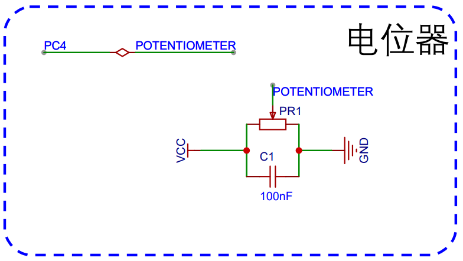
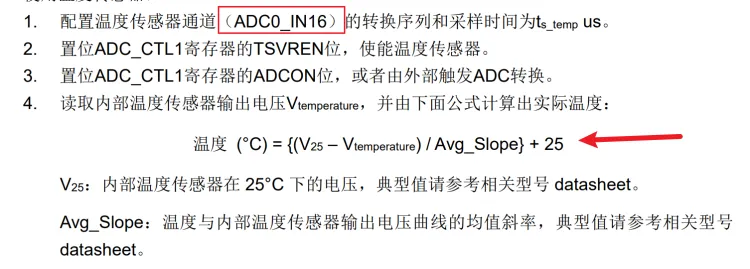
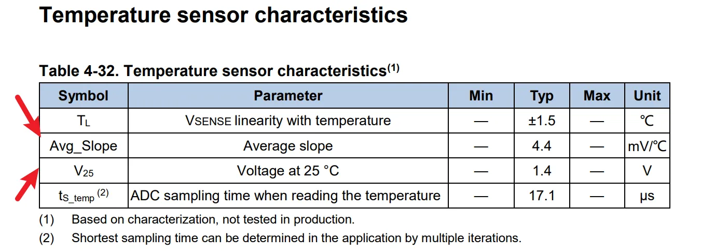
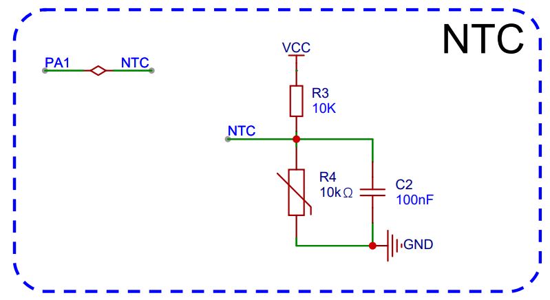
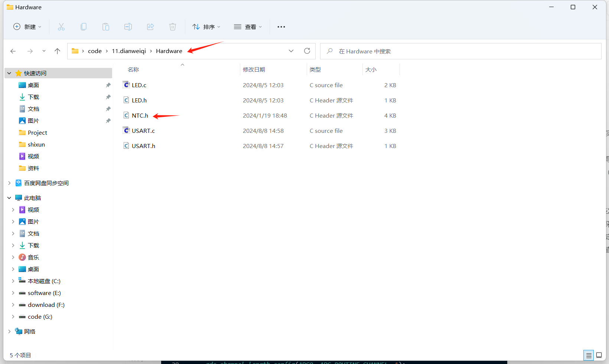

<!DOCTYPE lake>
<h3 data-lake-id="W8usy" id="W8usy"><span data-lake-id="ue9aa7e4f" id="ue9aa7e4f">电位器</span></h3><h4 data-lake-id="AD0vv" id="AD0vv"><span data-lake-id="uad7ccdde" id="uad7ccdde">原理图</span></h4><p data-lake-id="u3e9d3967" id="u3e9d3967"></p><p data-lake-id="u6ab0a123" id="u6ab0a123"><span data-lake-id="ua118ff79" id="ua118ff79">1.用万用表测量</span><code data-lake-id="uccfed481" id="uccfed481"><span data-lake-id="u739df56c" id="u739df56c">PC4</span></code><span data-lake-id="u0aa671c2" id="u0aa671c2">引脚的电压。</span></p><p data-lake-id="u59f77093" id="u59f77093"><span data-lake-id="u8e77c592" id="u8e77c592">2.用ADC检测读出</span><code data-lake-id="u63785ea2" id="u63785ea2"><span data-lake-id="u5b68af54" id="u5b68af54">PC4</span></code><span data-lake-id="u7b0c1103" id="u7b0c1103">引脚的电压。</span></p><h4 data-lake-id="lV33L" id="lV33L"><span data-lake-id="u9a059a9c" id="u9a059a9c">使用万用表</span></h4><p data-lake-id="uc5bcf715" id="uc5bcf715"><span data-lake-id="ucdb4c2c6" id="ucdb4c2c6">1.将万用表中间旋钮扭到电压测量位</span></p><p data-lake-id="u1b3b87a9" id="u1b3b87a9"><span data-lake-id="u0e57eec5" id="u0e57eec5">2.正极（红色的线）接PC4</span></p><p data-lake-id="u78cdfdb8" id="u78cdfdb8"><span data-lake-id="u50dbcd34" id="u50dbcd34">3.负极（黑色的线）接GND</span></p><p data-lake-id="udda568fd" id="udda568fd"><span data-lake-id="ua333c395" id="ua333c395">4.读取电压表上面的值</span></p><h4 data-lake-id="kVMgB" id="kVMgB"><span data-lake-id="ue2c69a7d" id="ue2c69a7d">电压计算公式</span></h4><p data-lake-id="ud1cff904" id="ud1cff904"><span data-lake-id="ue044deb3" id="ue044deb3">芯片基准电压：3.3v</span></p><p data-lake-id="uf3d96d2d" id="uf3d96d2d"><span data-lake-id="u430d3b55" id="u430d3b55">基准电压的adc对应数值：4096</span></p><p data-lake-id="u2064ba15" id="u2064ba15"><span data-lake-id="u785d6033" id="u785d6033">测量值：为adc引脚具体测量值</span></p><p data-lake-id="uebe3729e" id="uebe3729e"><span data-lake-id="u844d00e4" id="u844d00e4">电压计算公式：</span></p><p data-lake-id="u0da9240f" id="u0da9240f" style="padding-left: 2em"><a class="yuque-card-link" href="https://cdn.nlark.com/yuque/__latex/a9fdec847b4ac4bff733550e8e13dca3.svg" rel="noopener noreferrer" target="_blank">math：math</a></p><h4 data-lake-id="Dfo6m" id="Dfo6m"><span data-lake-id="uf19c6010" id="uf19c6010">代码实现(具体实现)</span></h4><span class="yuque-card-unsupported">[codeblock]</span><h3 data-lake-id="QUSwZ" id="QUSwZ"><span data-lake-id="u26d8323d" id="u26d8323d">芯片内部温度</span></h3><h4 data-lake-id="R43dY" id="R43dY"><span data-lake-id="uf4ab69be" id="uf4ab69be">通过手册我们得知：</span></h4><p data-lake-id="u3b4e2556" id="u3b4e2556"></p><p data-lake-id="u013fae9e" id="u013fae9e"><span data-lake-id="u7d61fa0a" id="u7d61fa0a">测量温度是不需要引脚的，所以不需要进行gpio模式设置 ，直接进行adc设置即可。</span></p><p data-lake-id="uef554697" id="uef554697"><span data-lake-id="ud6a649c9" id="ud6a649c9">温度使用的是adc0，通道位16</span></p><h4 data-lake-id="fwXJx" id="fwXJx"><span data-lake-id="ue8fe90e1" id="ue8fe90e1">温度计算公式（数据手册）</span></h4><p data-lake-id="u3a41e496" id="u3a41e496"></p><p data-lake-id="u9bc090d1" id="u9bc090d1"></p><h4 data-lake-id="ycxNc" id="ycxNc"><span data-lake-id="u109caa17" id="u109caa17">代码实现</span></h4><span class="yuque-card-unsupported">[codeblock]</span><h3 data-lake-id="lNLL7" id="lNLL7"><span data-lake-id="u3448f92e" id="u3448f92e">热敏电阻</span></h3><p data-lake-id="u9a18e0eb" id="u9a18e0eb"></p><h4 data-lake-id="NmNA2" id="NmNA2"><span data-lake-id="u0369da24" id="u0369da24">热敏电阻计算公式：</span></h4><h5 data-lake-id="FnUJT" data-lake-index-type="2" id="FnUJT"><span data-lake-id="uc891cb27" id="uc891cb27">通过ADC采样计算出热敏电阻位置的电压</span></h5><p data-lake-id="u78321787" id="u78321787" style="text-align: center"><a class="yuque-card-link" href="https://cdn.nlark.com/yuque/__latex/b79639e46ce0ce8058c8df7ab91a3f08.svg" rel="noopener noreferrer" target="_blank">math：math</a></p><ul data-lake-indent="1" list="ucbde5a1a"><li data-lake-id="u92e85142" fid="u9d3c1dac" id="u92e85142"><code data-lake-id="u415ea947" id="u415ea947"><span data-lake-id="u95967fcf" id="u95967fcf">ADC_Value</span></code><span data-lake-id="ub54816f2" id="ub54816f2">就是通过ADC采样出来的的数值，范围是</span><code data-lake-id="u2019e1b1" id="u2019e1b1"><span data-lake-id="ubd95d8ef" id="ubd95d8ef">0-4096</span></code><span data-lake-id="u46da0acb" id="u46da0acb">。</span></li><li data-lake-id="u754631b0" fid="u9d3c1dac" id="u754631b0"><code data-lake-id="ud865169c" id="ud865169c"><span data-lake-id="u05b10715" id="u05b10715">V_ntc</span></code><span data-lake-id="u3210248f" id="u3210248f">即为对应的电压值</span></li></ul><h5 data-lake-id="a8PUa" data-lake-index-type="2" id="a8PUa"><span data-lake-id="u903aa8aa" id="u903aa8aa">通过欧姆定律计算热敏电阻的阻值</span></h5><p data-lake-id="u47c61d72" id="u47c61d72"><span data-lake-id="ucd7547b1" id="ucd7547b1">经过R20电阻的电流和整个电路的电流是一致的，所以有：</span></p><p data-lake-id="u9f287549" id="u9f287549" style="text-align: center"><a class="yuque-card-link" href="https://cdn.nlark.com/yuque/__latex/3f2df349530d913d8aaea0e1076a05c3.svg" rel="noopener noreferrer" target="_blank">math：math</a></p><p data-lake-id="u7e69a831" id="u7e69a831"><span data-lake-id="u29872068" id="u29872068">串联分压，电流不变。上面是热敏电阻ntc和10k电阻的电流等式，根据公式推导出热敏电阻的阻值计算公式：</span></p><p data-lake-id="udc48bd6a" id="udc48bd6a" style="text-align: center"><a class="yuque-card-link" href="https://cdn.nlark.com/yuque/__latex/f74344e6d25ca2b39d6eafd17ab6ef88.svg" rel="noopener noreferrer" target="_blank">math：math</a></p><h5 data-lake-id="lDAfm" data-lake-index-type="2" id="lDAfm"><span data-lake-id="ub086a196" id="ub086a196">通过阻值查表得到温度</span></h5><p data-lake-id="u18063c66" id="u18063c66"><span data-lake-id="u0fd801bf" id="u0fd801bf">根据阻值对照该热敏电阻提供的对照表，得到对应的温度值，下面是《热敏电阻与温度对照表》。</span></p><p data-lake-id="uc463b4ad" id="uc463b4ad"></p><p data-lake-id="ub863f605" id="ub863f605"><span data-lake-id="u6154394f" id="u6154394f">采用表的方式来记录 电阻值和温度的关系。</span></p><p data-lake-id="udfe7286e" id="udfe7286e"><span data-lake-id="uf85312d4" id="uf85312d4">其中，表中记录的是阻值，下标记录的是温度。可以通过阻值比对，查询出下标，下标就是对应的温度。</span></p><h5 data-lake-id="yCrVj" data-lake-index-type="2" id="yCrVj"><span data-lake-id="ud37e9970" id="ud37e9970">NTC.h</span></h5><span class="yuque-card-unsupported">[codeblock]</span><h5 data-lake-id="IOdbM" data-lake-index-type="2" id="IOdbM"><span data-lake-id="u5c9e36e7" id="u5c9e36e7">代码实现</span></h5><p data-lake-id="u183be48a" id="u183be48a"><span data-lake-id="u4126917c" id="u4126917c">使用代码之前需要将NTC.h文件放入工程（hardware）内部</span><a class="yuque-card-link" href="../../_assets/8ad8422481f8dad206c0fbc0.h">NTC.h</a></p><p data-lake-id="u4de0a143" id="u4de0a143"></p><span class="yuque-card-unsupported">[codeblock]</span><h3 data-lake-id="lHp2h" id="lHp2h"><span data-lake-id="uffcc61cf" id="uffcc61cf">ADC多通道采样设置</span></h3><h4 data-lake-id="NxZx5" id="NxZx5"><span data-lake-id="udeb6ea4d" id="udeb6ea4d">ADC初始化配置</span></h4><span class="yuque-card-unsupported">[codeblock]</span><h4 data-lake-id="SRD7R" id="SRD7R"><span data-lake-id="u7832418a" id="u7832418a">获取采样值</span></h4><span class="yuque-card-unsupported">[codeblock]</span><h4 data-lake-id="vB3d2" id="vB3d2"><span data-lake-id="u667a8501" id="u667a8501">完整实现(需要进行移植)</span></h4><span class="yuque-card-unsupported">[codeblock]</span><span class="yuque-card-unsupported">[codeblock]</span><span class="yuque-card-unsupported">[codeblock]</span>